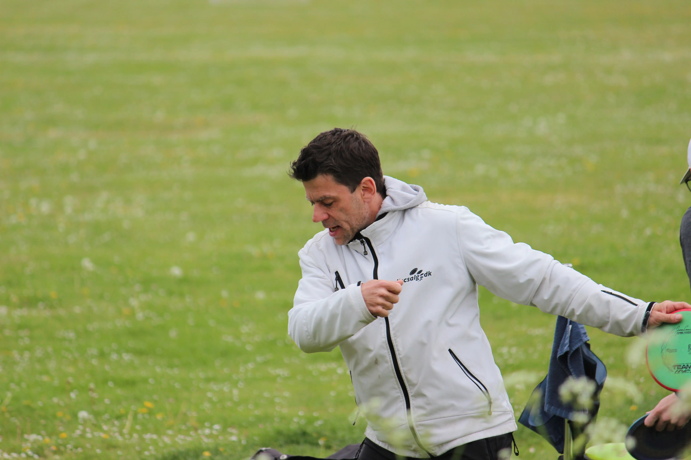
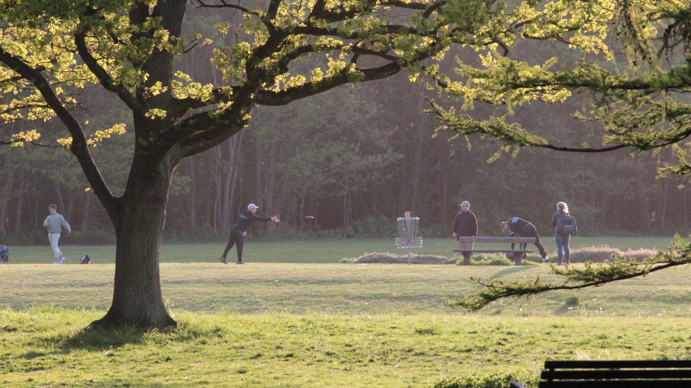

Københavns Frisbee Klub
Bliv medlem - alle er velkomne!
Du bliver medlem af KFK ved at følge disse 2 trin:
Udfyld dette spørgeskema med 8 spørgsmål.
Overfør 350 kr. til 43494 på MobilePay.
Når du har tilmeldt dig, vil du modtage en velkomstmail med yderligere information. De 350 kr. gælder for en hel sæson.
Som medlem af KFK får du:
Mulighed for at deltage i klubbens faste formater som Tirsdagstræning, Torsdagsmatch, SommerLiga, VinterLiga samt alle klubbens øvrige sociale arrangementer.
Et gavekort på 120 kr. samt 10 % på alle køb hos Disc Connection året ud.

Tirsdagstræning
Som medlem af KFK kan du se frem til at træne med ligesindede hver tirsdag fra kl. 16.30 - 18.30 i og omkring Valbyparken.
Cheftræner Sinus Frank forestår træningen for de erfarne - mens grundlæggende, teknisk træning forestås af hjælpetrænere.
Er du endnu ikke medlem, så kom og se om det er noget for dig!
Torsdagsmatch
Som medlem af KFK kan du også se frem til at konkurrere med dine klubkammerater hver torsdag fra april til oktober!
Når du tilmelder dig en given torsdag, vil du blive inddelt i en gruppe (med 3-4 andre) og tildelt et starthul.
Kl. 17.00 (sharp!) starter alle grupper med at spille deres tildelte hul, og bevæger sig herefter videre igennem banen.
Tilmelding sker på Disc Golf Metrix, hvilket kræver oprettelse af en profil. Dette vil dine klubkammerater glædeligt hjælpe dig.
